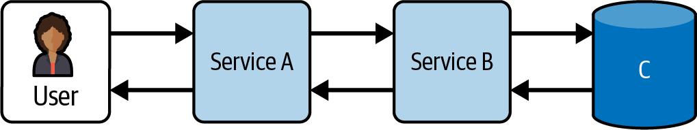

Distributed systems mean additional latency and a higher chance of failure as requests go over the network. If you get timeouts and retries wrong, a slow service can be worse than a broken one as threads get tied up waiting for it to respond. Once the service recovers, the challenges aren’t over yet, because a thundering herd of requests can bring it back to its knees.
We need to build microservice-based systems differently. The services should be written to handle problems from the things they depend on, including the shut down of the hosts they are running on.
The systems should be resilient to failure, with built-in redundancy. Retries, recovery, and remediation should be automated and graceful wherever possible. The microservice promise of a small blast radius on failure only applies if you have made sure the rest of the system can work when an individual service has problems.
Later in the chapter, I’m going to talk about how to build resilient services, and then resilient systems. First, though, let’s discuss what resilience means, and especially what the challenges are to building a resilient distributed system.
Simply stated, resilience is the capacity to withstand or recover quickly from difficulties.
Things will go wrong in any production system. A resilient software system will continue to provide an acceptable level of service even if some parts of the system are under stress or have stopped working. It will also recover quickly and without losing any critical data.
Many of the things we are going to discuss in this chapter that help with resilience will also make your system more complex to understand and more expensive to operate. You will have to make decisions about how much resilience you need to build in, and that depends on what an acceptable level of service is for you. Can you run in a degraded state for a while? Which capabilities are absolutely essential and which are nice-to-haves?
These aren’t purely technical decisions; they depend on a deep understanding of your business, and of end-to-end flows that might cross boundaries between your small autonomous teams. Much of the work to build a resilient system happens at a microservice level, but not all: you need to make higher-level decisions too. Which capabilities are critical? What’s an acceptable duration for particular requests to be processed? How many layers of redundancy are you prepared to pay for?
Some of these decisions can be made at a team level, by senior engineers and product people in the team. Other decisions are going to need to be discussed with senior leadership and stakeholders.
If you are used to working in monolithic systems where the calls your code makes are in-process, you may not realize the full implications of moving to a distributed model where calls go over the network.
Many years ago, L Peter Deutsch, James Gosling, and others at Sun Microservices documented eight fallacies of distributed computing, the false assumptions programmers new to distributed computing typically make. These fallacies are still highly relevant today and continue to catch out developers. They are:
The network is reliable.
Latency is zero.
Bandwidth is infinite.
The network is secure.
Topology doesn’t change.
There is one administrator.
Transport cost is zero.
The network is homogeneous.
These are a useful framework for thinking about resilience and indeed system design in general.1 I want to briefly talk about them, the ways they can trip you up, and what you can do to protect yourself. Later in the chapter, I’ll expand on the resilience techniques mentioned in this run through.
Any call you make over the network might fail. A switch might break, the network may be misconfigured, or the service you are calling may be unresponsive for some reason. You need to code defensively.
Set a timeout on any call you make so that you don’t wait indefinitely for a response. Retry the call if that makes sense—but don’t retry unless your request is idempotent (a lack of response doesn’t mean the request wasn’t processed).
If you can’t get a response, handle that: fail gracefully, and return meaningful error information.
It’s not just calls in your code that can be affected by network issues. If you are relying on logs or metrics being aggregated somewhere, you cannot assume every log or metric will be shipped successfully, or that they will be shipped quickly. What does that mean if you are relying on an alert based on those logs or metrics?
At the system level, you should deploy your services so that if one part of the network fails, it won’t take down all of your instances. This means having, for example, services running in different availability zones and maybe different regions as well. For containers, this is the reason for having something like Kubernetes that allows you to specify anti-affinity settings so that replicas of your application are not deployed on the same machine.
Latency is the time it takes to send a signal between two points in the network. The speed of light is the constraint here: nothing moves faster than that. It will never take less than 30 milliseconds to send a message from Europe to the US and back. You can mitigate the effects of these geographical limitations through making sure services are in the same geographical region, or using content delivery networks (CDNs), which have multiple points of presence, or POPs, to cache data closer to your end clients.
That doesn’t solve another issue though, which is that the latency of network calls mounts up as you make multiple calls (which can be common in a microservice architecture). To mitigate this you should try to minimize the number of calls you make, requesting all the information you need in one go, for example—or at least making calls in parallel.
You also need to test your defensive code for cases where the calls you make return a response, but return it slowly. Slow can be worse than down. You can end up doing a lot of processing that never results in a response the client sees, because they’ve gotten tired of waiting and hit “refresh” on the page. Your retries might also be adding to the load on an already overloaded system. You can work around this with timeouts and circuit breakers, covered later in this chapter. You can also look at whether the calls you are making are necessary: could you cache some data, if it doesn’t change frequently? Can you use the stale version on error, at the very least?
One final way to reduce the impact of latency is to design systems to be asynchronous, putting queues in place between services so that a service’s work is complete once it puts a message on that queue. This can be very effective for a workflow where you don’t need to retrieve information, and it removes some complexity about handling retries. An example would be a checkout process, where you can return “Order successful” once the message is in the queue and have the consumer of the queue deal with notifying the customer when the order has been placed, or of any issues with that happening.
Bandwidth is the maximum rate of data transfer across a given path. High volumes of data being passed around a network can result in network congestion, affecting performance and causing packet loss (it may also cost you a lot of money in data transfer charges, depending on your system architecture).
Design your services to minimize the amount of data you pass around. Designing interfaces so people can get just the information they need can make a big difference.
One example from my time on the content platform team at the FT came from our desire to adhere to REST best practice. We had an API for a list of articles, but the first-pass design only included the unique identifier for each article. What that meant is that anyone requesting that list would immediately then make calls to request each article by UUID, to get the headline, author, and topic that they needed to display on the list. This meant n+1 requests for each list page, where n is the number of items in the list; and also retrieving the full information for each article, most of which was immediately discarded.
Adding those key fields into the list response reduced the number of calls and the data being passed around. It did, however, bring challenges of how to make sure that information in the list got updated when a piece of content was updated, since lists and article updates came into our system separately. This is a challenge around any sort of caching in a microservice architecture: how do services know when data they don’t own but do reference has been updated? Probably the simplest approach is to cache for a period of time and then go back to source to get the latest: notifications that a new version is available may result in less traffic for things that don’t change often, but are more complicated to implement and more error prone.
This is more about security than resilience so I’ll keep this fairly brief given the focus of this chapter.
You can’t assume that your network is secure. Any call over the network could be intercepted. This has implications for how we build microservice-based systems.
Often, people implicitly trust any service within the network perimeter. This leaves you with a situation that is actually quite like that with a monolith, which is that once you are in, you have access to the whole thing.
The alternative is to adopt a zero-trust model where you always verify that users making a call to your service are who they say they are, and encrypt data in transit and at rest. If you do this, you have greater defense in depth because an attacker gaining access to one service can’t easily access all the others.
The network topology is the arrangement of links and nodes in the network. It changes—of course it does: hardware gets replaced, new releases mean that instances of your microservice disappear and new ones appear. Some of these changes are permanent, while others are a result of resilience built in to other parts of the system. Additionally, you have no control over the decisions other teams make for the servers and services they own.
This is where you need service discovery: ways to find where a service is currently running. While using DNS is better than a hardcoded IP address, DNS records tend to have a time-to-live value that is too long to work in an environment where network topologies change all the time—for example, with containers or cloud provisioning. Container orchestrators (e.g., Kubernetes) offer service discovery as a core service.
It’s not just about finding where the service is at the moment, it’s about coping with unexpected changes. What happens if you are calling services owned by another team and that team moves those services to a different region? If you make a lot of calls to those services, your latency can take a hit. This is even more true for third-party services you may call.
In any nontrivial system, there will be more than one person making decisions about the network. You don’t know when someone is about to upgrade the service you call, or move it to a different host, or a different region. You also may not find out about these decisions until they have already been implemented.
To prevent this from causing havoc, you should first make sure that you define expectations and best practice within your organization. For example, your organization may decide that services must register with a service discovery mechanism, and must send logs, metrics, and monitoring to the central systems, using the same system codes as identifiers regardless of whether that system is now running somewhere quite different.
As an owner of a service you should aim to understand when you are making changes that might impact others too. Is this a major change to the API? If it could break an integration, let people know. And wherever possible, make changes without any downtime, either through upgrading instance-by-instance or by deploying the new version in parallel and moving people over. Alternatively, design the system so that there is a higher degree of decoupling—for example, through using message queues. This means consumers and producers don’t really need to care about each other at all.
There are two types of cost related to having a distributed system: the cost of running a distributed system, and the cost of sending requests between two separate services.
Going over the network costs money. A badly designed microservices-based system can involve sending a lot of data from one place to another, and that bandwidth can be expensive. Even a well-designed one can incur all sorts of costs, and you need to keep on top of them.
It also costs you time to pack up and then unpack each request you send. A call over the network is much slower than a call within a process. If the call is to a server in a different part of the world, the speed of light makes this even worse. If latency is critical for your use case, microservices may not be for you. And even if it isn’t, you will need to design your flows so that you don’t have a chain of synchronous calls bouncing between separate cloud provider regions.
You can’t expect every server on your network to be identical. In fact, with microservices you should expect to see some services written in a different language or running on different hardware.
That means you need to build services that are interoperable, i.e., they comply with standards and use the same representation of data, perhaps by sending it as JSON over HTTP.
All the fallacies of distributed systems apply to a microservice architecture, but having lots of small services means two things. First, the downside. You absolutely will see transient failures having an impact all the time—it’s purely a numbers game. This makes it even more important to build in retries, circuit breakers, bulkheads, and more.
Second, the upside: well-designed services will make for a more resilient system overall. Unlike with the monolith, you don’t lose all functionality at the same time. You can degrade parts of the experience gracefully—for example, deciding to show a static list of most read content if you can’t access personalized recommendations.
In order to do this, though, you need to understand what makes sense for your systems and your organization. This isn’t about technology, it’s about your business.
A large part of building a resilient system is about understanding your system. Do you have predictable load or are there unexpected peaks? How long could a particular capability be down without a serious impact? What would graceful failure look like?
For example, do you fail open, or fail closed? For a subscription newspaper like the FT, if you can’t check someone’s subscription status, failing open might be the best choice: you don’t annoy the people who have paid for a subscription, and maybe the people who get to see content for free for a while will like it enough to subscribe. For payment systems, likely failing closed is a safer choice: you don’t want people getting free orders!2
You should look at flows through your system, starting with the most important, and think about what matters. What’s the level of service you should be offering your customers? That’s something you’ll need to speak to your business stakeholders about to really understand. They are the ones that will know how the service is used and what their customers expect.
As the authors of the Site Reliability Engineering book point out, “It’s impossible to manage a service correctly, let alone well, without understanding which behaviors really matter for that service and how to measure and evaluate those behaviors.”3
If someone tells you a particular web page needs to return results “quickly,” what does that mean? It depends on context, of course. But you should work out with your stakeholders where the line is at which response time starts to be “too slow” for this particular page, and when that happens, you can say that your performance is degraded.
That starts by identifying service level indicators (SLIs) that measure some aspect of level of service. Then, you agree with your stakeholders on a target value or range of values for each of those SLIs. This gives you your service level objectives (SLOs).
Setting appropriate service level objectives can be an extra challenge when you have small, autonomous teams—maybe there’s no one that understands the full end-to-end flow. However, it’s important to be thinking about the whole flow: trying to set SLOs for partial flows just because that’s the bit your team owns is not particularly meaningful without understanding the rest of the flow too.
Here are some commonly used measures that help with setting SLOs.
How long it takes to process requests to the service. Generally you want to exclude the occasional outlier and measure something like the duration that 95% of requests are completed in (the 95th percentile, sometimes abbreviated to p95). For example, you might have an SLO targeting a 95th percentile of under 1.5 seconds.
What percentage of requests result in an error? You should decide here what “error” means—for example, some nonsuccessful requests happen because a user sends in garbage data. Do you want those to count as errors?
As an example, for an HTTP request, you might set a target that you have fewer than 1% of responses from the 5** status code group in any five-minute period.
How many requests per second is your service handling? The related SLO should more than cover peaks in traffic. At the FT when I first joined, we had the idea of supporting “Lehman day + 10%.” At the time, the FT’s peak load had been on the day that Lehman Brothers filed for bankruptcy in 2008.
One thing I have found useful is thinking about what would happen if you lost one of your two regions at the same time as a normal traffic peak happened. That would encourage me to set an SLO that was twice that peak traffic: both regions would need to be able to handle peak traffic on their own if all traffic was failed over.
What fraction of time is your service usable? That could be based on the fraction of well-formed requests that succeed in a specific time period and is often talked about in terms of the number of “nines”: 99.99% is 4 nines of availability and equates to 4.38 minutes of downtime per month or 52.60 minutes per year.
Of course, there’s a lot more nuance to what’s acceptable to a customer—or your business stakeholders—in terms of availability (and business people aren’t thinking in terms of “nines”). Being down for nearly an hour once a year could be much worse than small outages spread out. Or vice versa! And it is worth understanding whether there are particular times where an outage would have an outsize impact, for example, of a payroll system at the end of the month; or of newspaper production systems 20 minutes before the paper needs to go to press.
Capture information about key times and make engineers aware of those, even if your SLO is actually set in terms of nines of availability. It gives them more context and allows them to avoid making changes at a time when that would have a bad impact. Another example at the FT would be making sure engineers were reminded that it was budget day, or that the US election was happening.4
One thing I particularly like about Google’s work on site reliability is the idea of an error budget. This is the concept that there should be room for error in almost any system, because 100% reliability is in most cases the wrong target. It’s very expensive to get the final 0.005%, and your customers can’t tell the difference because the things they use to access your site aren’t 100% available.
If you can get into the mindset that it’s OK to be unavailable as long as you hit your availability target, that allows you to make decisions about the level of reliability you need. For example, if you are building an internal system and it’s fine for it to be unavailable for half an hour at a time and you can move regions in that time—you don’t need to run multiregion, and that will save you money and make for a simpler architecture.
Let’s imagine a very simplified scenario where a customer calls your microservice, A, and as part of processing that request, A makes a synchronous HTTP call to service B.
The happy path is that B responds quickly, with a “200 OK” response and some payload, A extracts the information it needs, and sends a response to the customer.
But what about the unhappy paths? If B responds with a “404 Not found,” you probably want to return an appropriate error message to the customer, but what if B responds with “500 Internal server error”? Or what if B doesn’t respond at all?
When you build a service in a microservice-based architecture, you are building something that can’t expect other services to be available.
At the FT, when we built our first microservices, we didn’t really consider this, so we had systems that expected to be able to connect to the database or to other services as part of starting up. This isn’t a great idea, because you start to have a complicated graph of which service needs to be spun up first, which means you are coupling your services together when that isn’t necessary.
Over time, we learned how to build services that don’t expect to be able to connect to other services at startup and can deal with loss of those services at any point.
But to do that, you need to understand the implications of not being able to connect to systems you depend on. In which circumstances should you retry a call? How long should you wait? Answering those questions is an important part of designing your microservice.
Next, I want to talk about several patterns that help to make a service resilient. You should make sure the services you build use these patterns, because resilience starts within each service. You also need to make the system as a whole resilient, which I’ll tackle in the section following this one.
The first part of building resilient services is to make sure you have more than one instance of your microservice, and that those instances are running on hosts that are not likely to be unavailable at the same time.
In the cloud, you want your instances to be in different availability zones, because zones are designed to minimize the sharing of physical infrastructure like power, cooling, and networking, and there is some level of guarantee that servers in different availability zones won’t be upgraded at the same time. This also applies for containers: if you are running a Kubernetes cluster in the cloud, you want servers to be in different availability zones and you want to make sure that replicas of the same container image run in different AZs (you can do this through specifying anti-affinity rules).
For a higher resilience guarantee, you should run in different regions. The promise (maybe it’s not as strong as that!) is that it should be very rare to lose more than one region.
Having multiple instances of your microservice supports zero-downtime deployments even if you are not doing immutable deployments: you deploy new code to one instance at a time and requests are served by the other instances in the meantime.
Once you have more than one instance of a service, you need a way to balance requests across the instances. The simplest way is to set up a load balancer and have instances register with that when they start up.
I learned a lot from Heroku’s concept of the 12-factor app, a methodology for building web apps to run effectively in the cloud and as part of a distributed architecture. One of those 12 factors is Disposability, which is particularly applicable in building a resilient service.
You should view individual instances of your microservice as disposable. In other words, they could be started or stopped at a moment’s notice.
That means you should minimize startup time. This allows rapid scaling if load increases, and it makes it easier to move instances around, for example, onto a different host.
Your services should also shut down gracefully when they receive a SIGTERM signal (a request from the operating system for the program to terminate). For a service that receives HTTP requests, that means refusing any new requests, finishing those in flight, and exiting. For a service consuming from a queue, you might return a job to the queue.
But graceful shutdown isn’t enough. Hardware failures can mean you don’t get time to respond to a SIGTERM. This means that your service needs to be able to recover from a sudden shutdown. Mostly, that means making sure that operations are idempotent: they can be applied multiple times with the same result as being applied once.
We are often better at dealing with a service that is fully down than with one that is degraded. There’s less ambiguity about whether the service is healthy enough to be serving traffic.
The first thing to do that will help with degraded performance is to make sure you set timeouts on your calls. I’ve found it very common to have incidents caused or made worse by requests not timing out. Often, the default in libraries is pretty long, in the order of 10 seconds. You should reduce this significantly. It’s better to fail quickly.
I was surprised to find that some HTTP client libraries don’t specify a default timeout at all, meaning a call to an unresponsive server will tie up a thread forever.
What should you set your timeouts to? You want to set them so that the timeout only fires when there is a problem. Here, you need to measure normal latency as a benchmark. A good heuristic is to set the value to a few multiples of the p99 latency value, and generally no higher than a few seconds.
Once you have a timeout set, what do you do when a call times out, or fails?
You want your service to be able to cope with an intermittent issue connecting to another service. That can happen, for example, during a service deployment, where a request has been routed to an instance that is no longer listening.
The simplest thing to do is to retry the request. However, that is not always appropriate. You don’t want to retry a request that is going to fail a second time because the request was malformed, or the resource doesn’t exist.
If you are using HTTP status codes correctly, it will generally be 5xx errors that you will retry, as these indicate a server failing to fulfill an apparently valid request.
However, you don’t want to retry too soon: you want there to be a realistic chance that the next call will work (e.g., because the load balancer has now taken the instance that is down out of the pool).
A naive approach to retry—where you just wait a period and try again, perhaps several times—causes issues when there are lots of requests that are being retried. You can end up with a spike in load, which can overwhelm the instances that are still functioning. That can also be bad when a service just starting up again gets hit with a lot of traffic because it’s getting new requests and retries for older requests.
So, what should you do? The next refinement is to apply some sort of exponential backoff. So, for example, your first retry happens after 1 second, the next one happens after 2 seconds, then 4….
This helps with potential spikes in load, but it raises a question. How long do you keep trying?
You don’t want to keep retrying after the person who made the original request got fed up and hit refresh on the page. You are doing work that will just get thrown away. This is particularly problematic if you have retries built into multiple services along the way.
I wouldn’t recommend doing multiple retries in a synchronous call stack. One retry after a short wait should hopefully get routed to a different service.
One final comment: add “jitter” into your retry behavior. This means adding a little randomness into how long you wait before retrying—for example, making it somewhere between 1 and 2 seconds.
The reason for this is that retries will otherwise cluster together, giving a very spiky load profile that can cause you problems.5
In a distributed system, you don’t know for sure whether a request was successfully processed somewhere down the stack. Any request made could be processed without a response making it back to the calling service.
What this means is that you need to make sure your requests are idempotent, even where these are requests that change state somewhere.
One way to do this is to include a unique idempotency key on requests. That means that a subsequent request with the same idempotency key will not be processed a second time.6
You don’t need to know much about the services that call you. What you do need to do is to take steps to protect yourself.
So, for example, you should make it impossible for someone to bring down your service by sending too much traffic through.
You can do that if you are behind an API gateway through throttling the number of requests. Depending on the API gateway you are using, that can apply at different timescales, so you might limit the requests per hour, but also look at burst protection, so the full hour’s worth of requests can’t come in 1 second.
Another approach is load shedding, where you deliberately fail quickly with minimal processing as your service starts to be under load. For example, you could keep a count of how many requests are currently in flight and return HTTP 503 (service unavailable) when you are maxed out.
When you build resilience into your services, you should also test it.
All too often, people write tests for the happy path and for failure cases, but not for when a service is slow. These tests will catch errors in your handling of a slowdown, before you get to the point of load testing or chaos engineering, both discussed later in this chapter.
As an organization, you should make it easy for people to build resilient services. You need to provide the scaffolding to do this, and this is something that should be part of the paved road. Many of the tools that can help should be owned by a platform team.
The most basic option is to create libraries for your programming languages that ensure timeouts are set on every request and support backoff and retry, with sensible default configuration settings. Make it easy to override these and provide documentation that helps people work out what settings they should use.
Beyond that, increasing resilience is one reason companies choose technologies like Kubernetes, service meshes, and API gateways. The team writing a service can focus on the business needs, deploying the application to a Kubernetes cluster, with the service mesh handling service routing, security, reliability, and traffic management within the cluster, and an API gateway protecting access to external-facing APIs.7
Resilience in a microservice architecture isn’t just about the individual services. You also need to build resilience into the system as a whole.
Here, I am going to talk about the systems made up of one or more microservices that product engineering teams build, including any third-party systems that form part of those systems. In the next section, I will talk about building resilient platforms.
It’s important to consider caching when designing a resilient system. Caching stores frequently read data closer to the consumer, protecting your site from being impacted by transient issues and reducing costs. You don’t need as many backend servers if a high proportion of requests get served from cache and never go near the backend.
You might think that caching is a bad idea for a news site, given that news is time-specific. However, a popular news article put onto the home page of a news site will make up a large percentage of the reads happening at any one time, so caching for a short period (up to a few minutes) gives a huge benefit. That can be particularly important if you also send out breaking news alerts!
However, caching adds complexity. It’s very hard to say when you can consider an article to be successfully updated if you are caching it in the Content API, and also using a CDN to cache website pages closer to consumers. People will see different versions of that article as caches clear in different places.
There is also a risk if you rely heavily on a cache that, should you ever need to clear it completely, you will overload your backend systems. As with many things, you should probably test this!
I’ve seen a number of incidents that come down to “our resilience made things worse.” Generally, this is because of a failure cascade. For example, one instance gets overloaded so the load balancer stops sending traffic there, but now all the other instances are getting additional load, increasing the chance that they will fail too. Or, the retries from a transient error cause overload and take the service down completely!
You need to set up your systems so that one instance going down, or one availability zone, doesn’t cause everything else to be overloaded. If you design a system with two regions, with a failover mechanism to run out of just one region—as the FT did—you need to be able to handle all traffic just in that one region.
You should test this periodically, through load testing during chaos engineering tests, for example. It’s easy not to pick up on architecture changes or increases in load that have taken you over what you can handle, and you can only really know for sure if you test.
You should also make it easy to know when load is beginning to lead to problems, so that you can respond by scaling up—and make sure that scaling is easy to do or happens automatically.
The other thing you should do is to install circuit breakers. A circuit breaker in an electric circuit will fail if the circuit is overloaded, protecting the system as a whole. It’s the same idea in software, although there is no physical component involved: software “circuit breakers” keep track of failures for calls out to another system, and if the number of failures exceeds a threshold, the circuit breaker “trips” and opens the circuit, stopping further calls from being made.
Then, after a suitable amount of time, the circuit breaker will let a call through to test if the downstream system is back in operation. If that works, the circuit is closed and calls will be sent through as normal.
Of course, you have to work out what you will do while the circuit breaker is open. That’s part of a bigger discussion: what—if any—fallback strategies make sense?
It’s easy to design your systems as though there will only ever be intermittent issues connecting to other services, but it’s unlikely to be the reality.
What should happen if your service can’t access other services it depends on? That’s key when designing your system architecture, and likely a question for your stakeholders as much as for the engineering team. It’s often a business decision.
What do your customers expect? What message should you return to them when things aren’t quite rosy?
Is there a fallback option? For example, if you are making a call to retrieve a list of suggested articles for the user to read, based on their profile, then on failure you could show them the most popular current articles instead, or return nothing and just remove that section from the rendered web page.
You can also make architectural choices that would minimize the impact of a service being unavailable—for example, by caching information in the service for a period of time and using that. This reduces load during normal operation, and you can go back to source when a cache item is stale, either accepting that this request will take longer or returning what is in the cache one last time while going back to source for the up-to-date value. This also provides the option of using stale data if the downstream system is unavailable.
Working out acceptable fallback behavior is also important where you are making calls out to external systems, such as when you are integrating with SaaS products. What will you do if your payment gateway isn’t available?
While you should be careful about retries to avoid cascading failures, they can also result in unnecessary work, producing responses that never make it back to the customer.
When you are processing a request synchronously, i.e., the customer calls a service, which calls another service, etc., you need to think about the whole request flow. If you implement backoff and retry in each service and a call goes through multiple services, you could end up doing a lot of work and taking a lot of time to do it.
Let’s consider a small chain of services as shown in Figure 12-1. A customer calls service A, which calls service B, which requests data from database C (this is a logical chain, not showing individual instances, or any load balancers or gateways).

If there is a problem with C, B retries the call. But what if A is also set up to retry calls? B retries after 1 second, then, because it’s set up for exponential backoff, retries after 2 seconds. Then A waits 1 second to try B again, and the whole thing repeats.
This adds 7 seconds onto the normal response time. It’s very likely that the customer has hit refresh before this has completed. But you don’t want to remove the retry in service A, because that provides resilience if there is a blip calling service B.
So, what can you do?
If the call needs to be synchronous, set a time budget. When the request is initiated, on entry into your stack, set a request header with a best before date (a timestamp). Each service should check, and if that best before date is in the past, stop processing and return quickly. At least you won’t do lots of extra work, and it then becomes the responsibility of the initiating service to decide what to do, or what options to offer to the customer—for example, an error message saying “not available at the moment, please try again later.”
But what this scenario shows is that synchronous calls are likely to result in an error for anything other than the most transient problem. You are better off designing systems to be asynchronous if you can.
Chained synchronous calls aren’t a great idea. Putting a queue between two services decouples them. Either the producer or the consumer can disappear and reappear with no impact on the other. This means messages are persisted on the queue and will eventually get consumed. Rerunning failed requests also gets easier with a queue: you can, for example, put them into another queue that can be processed when an underlying issue has been fixed. A producer doesn’t have to know anything about the current state of a consumer. In fact, the producer doesn’t even necessarily know what services consume these messages, and it can be easy to add another consumer type.
For example, when we rebuilt our Change API at the FT, change messages were validated to make sure they were in the right format and contained mandatory fields, then written to a queue. This meant that a call to the Change API generally returned successfully and quickly. The original implementation had consumers for writing a change to a Slack channel, and into the third-party system that handled change tracking. When we decommissioned that system we were easily able to start writing the changes to a data store instead, with no change to calling code or the entry point to the Change API. Queues make both writing and running your services easier.
If you are running in multiple regions, you may want to find a way to send all traffic to just some subset of those regions, either automatically as a result of some monitoring, or manually.
You do need to think about the overall system topology, including calls out to services from other domains. For example, what if your services are running in Europe and normally call a geographically load-balanced API platform? If that API platform fails over to be run only out of the US, you can have a big increase in average latency. Could that cause unacceptable latency, or timeouts?
Also, if failover is an approach you want to rely on, you need every region to be able to cope with all your traffic.
And finally, if you don’t practice this approach, you may find you struggle to get everything failed over and working. At the FT, we practiced failing over the API platform and the website regularly, getting different engineers to do it, and so when we needed to do it for real, we knew it would work and everyone felt very comfortable with the process.
You should definitely make sure you are resilient to data issues. That can be loss of a database, corruption of the data (this can include data corruption caused by someone making a widespread data change), or inconsistencies.
You need to back up your data, and you need to regularly test that you can restore from those backups. Otherwise, you can’t be sure the restore process will work when you need it to.
In a microservice architecture, there will be a degree of duplication of data. It’s important to understand which datasource is the canonical version of the data. That absolutely must be backed up.
Other data could be repopulated from this datasource. Whether that makes sense depends on the context for your organization. If there is a lot of data to repopulate, you may decide you can’t do that within an acceptable time frame, and take steps to back up the dependent data store too.
Another aspect of duplication is inconsistency of data, either temporary (e.g., because a new version of a piece of content hasn’t made it to every data store) or permanent (e.g., the publishing of that new version failed in one region but not the other).
That means thinking about how you would know about inconsistencies, and having mechanisms for fixing them. Writing tooling that checks data in multiple data stores and compares it can be enough, for something like content publishing where a republish solves the issue. In fact at the FT we went a little further, and because content publishing is idempotent (can be done many times with no side effects), we wrote tools that repeated publishing of recent content, just to reduce the chance of inconsistencies in the end data stores.
You should have individual instances of your services running in different availability zones and maybe different regions.
Even if you are in multiple regions, though, you should consider what you would do if one of those regions went down for a significant amount of time. Could you replicate your production system in a new region? How long would that take you?
Could you do it using a new account? That would mean having backups of your data stored outside your main account, but it could save your bacon in the event of a ransomware attack.
The systems that product engineering teams build exist in a wider context: the full software estate, including platform capabilities—for example, DNS or CDN providers, source control, build and deployment tooling, etc.
Some of these capabilities will be built internally, others will be provided by third parties. Regardless, there is a need for resilience here too, and for understanding your fallback options.
Modern systems tend to make use of SaaS solutions, to good effect. Why spend time building something that isn’t critical to your business and that someone else has already built?
Beyond that, there are also some sorts of systems you definitely shouldn’t build yourself, including payment platforms, identity and access management, CDNs, and DNS. It’s better to have the experts build and run these systems.
What this means, though, is that you have a key part of your system that you don’t run. How should you think about resilience when it comes to these systems?
You may think of these as third-party software that is not your responsibility, but when your customers can’t view your website, they don’t know whether your site is down for a reason within your control or because of a vendor you rely on. They simply know that your site is down.
Where you have a third party providing critical functionality, you need to understand what service level they expect to provide, and what happens if they can’t meet that.
You should have some service level agreement (SLA) as part of your contract with these providers. From experience, while this may get you some money refunded if the system is down for an unexpectedly long time, it’s also quite possible that your SLA only covers the time until the supplier acknowledges that you have a problem, not until they fix it. The important thing is to understand what you can expect. For example, does the provider do regular backups of your data, so you could recover if someone in your organization accidentally deleted all your tickets or all your source code repositories?
And you have decisions to make too. One decision is, do you want to build in redundancy by having a second provider? This is a trade-off. While it may provide greater resilience, having a second CDN provider is going to cost you twice as much. Potentially more of a problem day-to-day is that you have to implement everything twice, which slows you down every time you make a change. You will also struggle to use the differentiating features from either supplier, because if one provider goes down and you have to switch, that feature won’t be available. You also need to test the redundancy regularly, or else you can bet it won’t work when you need it.
This is a discussion I had a few times at the FT, most recently after the Fastly outage in 2021 that I mentioned in Chapter 8. A code change made several months earlier allowed a particular type of configuration change, and when a customer made that change, it brought Fastly down. This not only impacted the FT but also a huge number of other sites across the internet, including Netflix, Reddit, and Amazon.8
Ultimately, the decision at that point was that we would accept the occasional outage on the basis of weighing up the impact against the additional cost of a second CDN supplier. In fact, the FT’s journalists moved to Twitter to share breaking news during the hours that the FT’s main website wasn’t available.
That doesn’t mean you shouldn’t put secondary providers in place for key software. It just means you need to consider whether you are prepared to pay the cost.
Part of the responsibility of an engineering enablement group is to build reliable tooling for product engineering teams. Crucially, you need the availability of these tools to be appropriate for the availability requirements of the services that would be impacted if this tooling was down.
Let’s consider what this means for different types of tools.
What are the things that allow you to deploy or release code? The list probably includes your source control software and your build and deployment pipelines.
Those things should probably be at least as resilient as the services being deployed or released through them.
That’s not always the case—it’s not always possible, particularly if you are using SaaS options—but it is at least worth considering whether you could work around them being down.
Let’s look at a couple of scenarios. If you are using a cloud option for source control, what happens if that is down? With the rise of GitOps, the unavailability of GitHub or GitLab could also stop you from being able to deploy code, and if you store your infrastructure as code, you may not be able to access that either. Do you have a backup plan?
The more your processes rely on these tools, the harder it is to work around it. You get out of practice.
I’m not saying don’t use GitOps—but work out a backup plan, and test it periodically. Or accept that an outage for your source control provider means you can’t deploy code and hope that it doesn’t happen in the middle of your own incident.
If your operational tooling is unavailable, you can’t know whether your services are working as expected.
That means that observability, monitoring, and logging tools need to be highly resilient and available.
Similarly, the tools you use to communicate during an incident need to be available as well. If you have heavily integrated your incident management process into Slack, as we did at the FT, what do you do when Slack is down?
Are your runbooks highly available? The last thing you want when you’re trying to fix a major incident is to find that you can’t access the runbooks.
Your backup doesn’t have to be sophisticated. Our backup for incident management for Slack was a WhatsApp group and a Google Doc to track information.
And for runbooks, we knew that our Biz Ops graph database wasn’t highly available; it was only running in one region. Rather than struggling to make this multiregion, we instead extracted runbook information regularly and stuck it in an S3 bucket, which was highly available and persistent.
However, as we discovered when our single-sign-on system went down, our S3 files were protected by single sign-on. We couldn’t access the runbook. After that, we introduced a third level of backup, with the runbook files zipped up and stored on Google Drive too.
What about the other tools you use for incident management? Do you have a backup for a video call? For chat? Could you get in touch with people if email wasn’t working?
Finally, and this is something we learned the hard way, are you using the same top-level DNS domain for observability tooling and your services? Lose that top-level domain and you are flying completely blind.
What would happen if someone accidentally—or on purpose—deleted all the repositories in your source control system. Do you have a backup?
The same applies for any kind of infrastructure configuration. Hopefully you have moved to infrastructure as code and that is all in source control. If not, could you restore the configuration if someone accidentally deleted it?
The same goes for tickets in systems that track planned work. If someone accidentally made a change that removed a field globally from your Jira instance, could you revert that through restoring a backup of the data? These types of things tend to only come to mind after it’s already happened, but time spent up front considering what could go wrong and how you would recover can be very valuable.
You may think you’ve built resilience into your system, but you have no way of knowing that until you’ve seen what happens when something goes wrong, such as some part of the system failing, or a spike in load that is greater than you planned to handle.
You should aim to test out your resilience choices before life tests them out for you. There are several processes that can help.
The idea of chaos engineering is that you should test that your system works the way you expect it to when things are going wrong. Microservice architectures are complex, and what you think will happen may not actually happen. Chaos engineering allows you to learn about how your system actually responds to particular scenarios.9
The first thing to clarify is that this is a misleading name, and often people now use the more reassuring “resilience engineering.” This term is less likely to scare business stakeholders and leadership!10
Chaos engineering often takes place in production. As I’ve mentioned before, no other environment has the full data, or the exact same set of systems. It shouldn’t result in problems. After all, you are looking to check that your resilience works.
There are tools to help with chaos engineering, automating the scenarios and allowing you to run them frequently, so that you pick up changes that have affected the resilience of your system. However, if you are new to chaos engineering you can start small, with manual changes. I can pretty much guarantee there will be some headscratching moments and you’ll learn something.
Russ Miles describes how to prepare for a “game day” in his book, Learning Chaos Engineering:
Decide whether participants will be aware of what is going to happen. For your first experiments, I would suggest informing people in advance, because it’s less stressful and you’ll still learn a lot. Later on, you can do what Russ describes as “Dungeons & Dragons” style, where people don’t know what is going to happen: this tells you whether you are actually able to spot things going wrong.
Decide who is going to participate. You may want to deliberately exclude people who always take a lead in handling incidents. After all, they may not be available when something happens for real.
Get approval. Make sure this is not a surprise to people. That includes checking that this isn’t going to coincide with, for example, a significant marketing push for your website. You don’t expect things to go wrong, but it’s better to be a little cautious.
Once you have the game day planned (and it doesn’t have to be a full day, of course), what next?
The first step is to understand what normal looks like for your systems. If you don’t do this, how will you know how to interpret graphs and logs when there is an issue?
Think of a small change. Maybe take a server down, cause a spike in traffic, slow down some responses.
You should make it something you expect to have a small blast radius, and where you expect your system to be resilient to the change. Don’t break things in production deliberately; it will make you wildly unpopular.
Think about what you expect to see. Would an alert fire? Do you expect an impact on response times or error rates?
See if your assumptions were right. Did the system still function as expected? Did you see your predicted changes?
I’ve found chaos engineering scenarios are a very effective way to hand over a system to a new team. You find out a lot about a system when you are trying to fix a problem, and you also get a lot more confident that you could fix one if it happened for real.
We also used chaos-type experiments to help our first-line operations support learn about our new website and content publishing platforms when we first built them. We had at least one experiment where an engineer on the team saw there was an issue and fixed it before anyone else could respond, which was also really good to see.
If you have a backup and you’ve never tested restoring it, all you have is a file. Possibly not even that!
And yet, I’ve heard of any number of incidents where it turned out that the backup process had been broken for days, months, or even years.
You really do need to test this process, and test it regularly.
For the databases that act as the source of truth for critical data, you should keep track of when the restore was last tested. We did this in our service repository, and we could look for critical systems where the restore hadn’t been tested in, let’s say, the last year.
The more often you do something, the more likely you are to get it right under stress, and the less likely that you’ve failed to pick up where a change stopped it from working.
We used to regularly practice failing over to a single region for ft.com, and for the content publishing platform. That meant we were pretty comfortable that any number of people could do that if we needed to as part of an incident.
Load testing shows you how your resilience plays out in practice. It’s particularly useful for seeing what happens when servers start to get overloaded. Do you end up with a cascading failure?
That means you need to load test components until they break, which is also pretty handy for capacity planning.
You should aim to run tests with gradually increasing load, and ones with spiky load. You may see quite different results.
Real traffic can provide more realistic results than synthetic traffic, and if you have the ability to automatically scale up your production environment you can get a lot of benefits from doing load testing in production, perhaps by recording real traffic and playing it back at a higher throughput.
If you don’t feel comfortable doing this in production, particularly if you are intending to run load testing to failure, you can also set up a staging environment to match production and run the tests there.
One of the things you should ask yourself after every incident is “Did our resilience help us?” In the best cases, you may end up doing an incident review for a near miss that had no actual user impact because of the resilience built into your system.
In other cases, you may find an incident arises from a scenario that hadn’t occurred to you.
Reasoning about resilience is complicated, and it gets more complicated when you try to reason about multiple things going wrong.
It can be helpful to focus on how to cope with one issue at a time. So, for example, at the FT we didn’t try to plan for losing AWS and DNS at the same time (obviously, if the DNS provider was also on AWS, that would be different).
It’s all a question of risk assessment. How likely is it that two highly resilient and independent systems would have an issue at the same time? The thing that bites you is normally when you discover that they aren’t as independent as you think. However, until you have made plans for all the possible single things that might happen, don’t worry about combinations.
Generally, you know you are struggling with resilience if you are spending all your time firefighting production incidents, so start there.
Make sure you use those incidents to learn about your systems. Look at the ideas covered in this chapter around building resilient services and systems: setting timeouts, backing off and retrying, caching, etc. Identify actions that would increase your resilience to an incident like that in the future and take them.
Initially, you may identify many potential improvements, and I’ve found this can be a bit overwhelming. In the aftermath of the incident, you add them all to your backlog, but a few months later, many will not have made progress. There are two things that can help: first, if you have a second incident where this identified action would have prevented it, agree that you will take this action immediately. Second, commit to taking one agreed action for any incident.
When you stop being overwhelmed by these natural chaos engineering experiments, start running your own. Keep it simple, and test what happens if you lose an availability zone or a region.
Spend some time thinking about your data, and making sure you have regular backups and you know how to restore them.
Run some load tests, and look at where the system starts to struggle. Again, schedule time to take some actions.
You may need to start off with a discussion about allocating time in teams for this sort of work. Often, people feel that product work is the priority, but your product needs to be available!
If you need to have this conversation with your product team, cite Marty Cagan, former senior vice president of product and design for eBay and author of Inspired. Cagan is clear that product managers need to make time for engineering work, or else they run the risk of systems getting to the point that they can’t be supported. Cagan suggests that product management should take 20% of all engineering capacity and give it to engineering to spend as they see fit. “They might use it to rewrite, rearchitect or refactor problematic parts of the code base, or to swap out data base systems, improve system performance—whatever they believe is necessary to avoid ever having to come to the team and say ‘we need to stop and rewrite.’”11
One thing that worked for me was to assign one Kanban lane for all technically focused work, so that the product owners could see the balance of that work against product features. The tasks in that lane were prioritized by the engineering team, but we made sure to explain the value of doing them.
It takes time to build a resilient system, but small improvements mount up.
In this chapter we looked at the fallacies of distributed systems. The network is not reliable, it changes all the time, with the changes made by different people. Latency and bandwidth constraints can have big impacts.
We covered service level requirements and the importance of understanding what your business needs before covering some sensible service level indicators.
Next, we covered how to build resilient services, through redundancy, fast startup and graceful shutdown, backoffs and retries on error—although with a caveat that requests need to be idempotent.
Then, we looked at reliability at a system level. Too many backoffs and retries in a system under load can cause a cascade of failures, so set a timeout and understand where you can fall back to different behavior.
It isn’t enough to build resilient products. The platform and tools that engineers use also need to be highly available and resilient. Make sure you also consider the tools that allow you to release a code change and see what’s going on in production.
You may think you have a resilient system, but this is something you should test. Run chaos engineering experiments and practice failing over and restoring data from backups.
1 See “Fallacies of Distributed Computing Explained” by Arnon Rotem-Gal-Oz for a more detailed discussion.
2 This example comes from Gergely Orosz’s Pragmatic Engineer newsletter, August 2022, where he notes that an unknown error message returned from a payment provider got treated as “success,” resulting in free UberEats orders in India for two days in 2019!
3 Betsy Beyer et al., Site Reliability Engineering (Sebastopol: O’Reilly, 2016).
4 You shouldn’t assume everyone working at a newspaper follows the news!
5 There’s a good writeup by Mark Brooker on the AWS blog.
6 There is a great blog post from Bart de Waters on how Shopify builds resilient payment systems, which includes a discussion of idempotency keys.
7 For much more on service meshes and API gateways, see Mastering API Architecture by James Gough et al.
8 See “Massive Internet Outage Hits Websites Including Amazon, gov.uk and Guardian”, The Guardian.
9 Casey Rosenthal and Nora Jones pioneered this at Netflix and wrote Chaos Engineering (Sebastopol: O’Reilly, 2020).
10 Although obviously chaos engineering just sounds cooler.